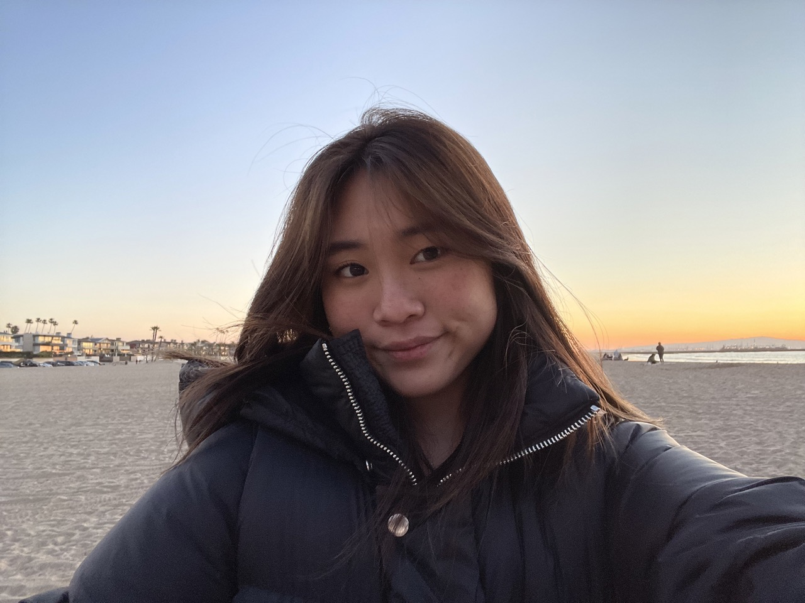

I'm a senior at Carnegie Mellon University studying ECE. I'm interested in lower level software development as well as full stack development. Last fall, I studied abroad in Amsterdam, where I explored Europe and lived like a local.
This past summer, I interned at Lutron Electronics as a Software Engineer Intern working on a building design tool search feature, using C#, XAML, and .NET. In Spring 2024, I was a research assistant (CHIMPS Lab) @ CMU, working on full stack development for a generative AI project. Previously, I interned at Lockheed Martin where I used Java, as well as a Pittsburgh startup called Ecotone Renewables working with circuits.
Relevant courses I've taken are: Distributed Systems, Computer Systems, and Web Application Development.
Outside of work and school, I like to boulder, take film photos (@yunisonfilm on instagram), and explore new cafes to find the best matcha. I'm also a member of Society of Women Engineers and a member of Central Church of Pittsburgh, where I am a Youth Group Leader, College Group Leader, and a vocalist on our worship team.